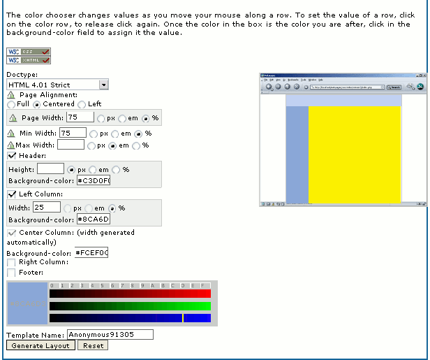

Recursos>>Estructuras

Al estudiar las reglas de estilo referentes al posicionamiento de elementos dentro de la página hemos visto que existía la posibilidad de crear páginas que simularan marcos sin necesidad de utilizar estructuras de frames. Igualmente podemos generar columnas de una forma mucho más acorde a las recomendaciones de accesibilidad sin necesidad de recurrir a la utilización de tablas. Como hay ocasiones en las que este trabajo puede resultar algo tedioso podemos recurrir a algunos sitios que nos ofrecen estructuras ya preparadas que podemos salvar en el disco para aprovechar en nuestra web.
Uno de estos sitios es una excelente página en francés http://css.alsacreations.com/Modeles-de-mise-en-page-en-CSS. De esta página se han extraído también varias ideas para los menús explicados en la sección de aplicación de técnicas CSS.
También dispones de un generador online de estructuras de tres columnas utilizando CSS. Está en inglés pero no presenta especiales dificultades porque lo único que tendremos que ir haciendo es especificar las reglas CSS que deseamos que se utilicen para configurar nuestro documento, incluidos los colores de cada una de las zonas de la página.

La columna central (o derecha si sólo tenemos dos) tomará la anchura automáticamente en función de las demás columnas. A medida que vamos pulsand sobre las posibilidades (, , o ) se irán abriendo secciones del formulario para especificar la anchura y el color. La forma de indicar el color consiste simplemente en pulsando con el ratón sobre los indicadores de rojo, verde y azul y cuando obtenemos un color que nos sirve hacer clic en la casilla de la zona correspondiente. Para hacernos una idea de cómo quedará la estructura tenemos un visor que se va actualizando automáticamente con los cambios que hacemos en el formulario. Al pulsar aparecerá una página en la que dispondremos de enlaces al archivo html y al css necesarios para nuestra estructura que podremos guardar en nuestro ordenador.
Con unas prestaciones similares y la posibilidad de tener las instrucciones en castellano encontramos un generador de estructuras de tres columnas en http://www.neuroticweb.com/recursos/3-columns-layout/index.php?idioma=es
Y, ya que estamos en esta web puede ser también muy útil el generador de cajas redondeadas que encontramos en http://www.neuroticweb.com/recursos/css-rounded-box/